Work With Multi-Band Rasters in R
Authors
Leah A. Wasser, Megan A. Jones, Zack Brym, Kristina Riemer, Jason Williams, Jeff Hollister, Mike Smorul, Joseph Stachelek
Overview
Teaching: 10 min
Exercises: 0 minQuestions
Know how to identify a single vs. a multi-band raster file.
Be able to import multi-band rasters into
Rusing therasterpackage.Be able to plot multi-band color image rasters in
RusingplotRGB().Understand what a
NoDatavalue is in a raster.
Things You’ll Need To Complete This Tutorial
R Skill Level: Intermediate - you’ve got the basics of
Rdown.You will need the most current version of
Rand, preferably,RStudioloaded on your computer to complete this tutorial.Install R Packages
- raster:
install.packages("raster")rgdal:
install.packages("rgdal")- More on Packages in R - Adapted from Software Carpentry.
Data to Download
This tutorial explores how to import and plot a multi-band raster in
R. It also covers how to plot a three-band color image using the plotRGB()
function in R.
The Basics of Imagery - About Spectral Remote Sensing Data
About Raster Bands in R
As discussed in the Intro to Raster Data tutorial, a raster can contain 1 or more bands.

To work with multi-band rasters in R, we need to change how we import and plot
our data in several ways.
- To import multi band raster data we will use the
stack()function. - If our multi-band data are imagery that we wish to composite, we can use
plotRGB()(instead ofplot()) to plot a 3 band raster image.
About Multi-Band Imagery
One type of multi-band raster dataset that is familiar to many of us is a color image. A basic color image consists of three bands: red, green, and blue. Each band represents light reflected from the red, green or blue portions of the electromagnetic spectrum. The pixel brightness for each band, when composited creates the colors that we see in an image.

We can plot each band of a multi-band image individually.
Data Tip
In many GIS applications, a single band would render as a single image in grayscale. We will therefore use a grayscale palette to render individual bands.
Loading required package: sp
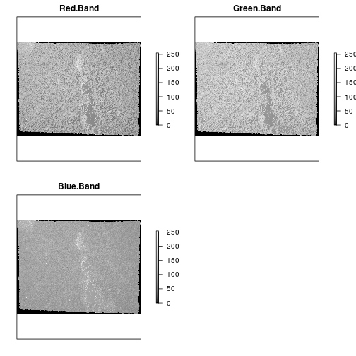
Or we can composite all three bands together to make a color image.
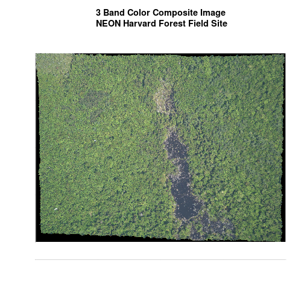
In a multi-band dataset, the rasters will always have the same extent, CRS and resolution.
Other Types of Multi-band Raster Data
Multi-band raster data might also contain:
- Time series: the same variable, over the same area, over time. Check out Raster Time Series Data in R to learn more about time series stacks.
- Multi or hyperspectral imagery: image rasters that have 4 or more (multi-spectral) or more than 10-15 (hyperspectral) bands. Check out the NEON Data Skills Imaging Spectroscopy HDF5 in R tutorial for more about working with hyperspectral data cubes.
Getting Started with Multi-Band Data in R
To work with multi-band raster data we will use the raster and rgdal
packages.
# work with raster data
library(raster)
# export GeoTIFFs and other core GIS functions
library(rgdal)
rgdal: version: 1.2-18, (SVN revision 718)
Geospatial Data Abstraction Library extensions to R successfully loaded
Loaded GDAL runtime: GDAL 2.2.2, released 2017/09/15
Path to GDAL shared files: /usr/share/gdal/2.2
GDAL binary built with GEOS: TRUE
Loaded PROJ.4 runtime: Rel. 4.8.0, 6 March 2012, [PJ_VERSION: 480]
Path to PROJ.4 shared files: (autodetected)
Linking to sp version: 1.2-7
In this tutorial, the multi-band data that we are working with is imagery collected using the NEON Airborne Observation Platform high resolution camera over the NEON Harvard Forest field site. Each RGB image is a 3-band raster. The same steps would apply to working with a multi-spectral image with 4 or more bands - like Landsat imagery.
If we read a rasterStack into R using the raster() function, it only reads
in the first band. We can plot this band using the plot function.
# Read in multi-band raster with raster function.
# Default is the first band only.
RGB_band1_HARV <-
raster("data/NEON-DS-Airborne-Remote-Sensing/HARV/RGB_Imagery/HARV_RGB_Ortho.tif")
# create a grayscale color palette to use for the image.
grayscale_colors <- gray.colors(100, # number of different color levels
start = 0.0, # how black (0) to go
end = 1.0, # how white (1) to go
gamma = 2.2, # correction between how a digital
# camera sees the world and how human eyes see it
alpha = NULL) #Null = colors are not transparent
# Plot band 1
plot(RGB_band1_HARV,
col = grayscale_colors,
axes = FALSE,
main = "RGB Imagery - Band 1-Red\nNEON Harvard Forest Field Site")
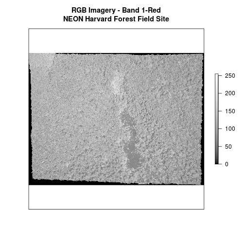
# view attributes: Check out dimension, CRS, resolution, values attributes, and
# band.
RGB_band1_HARV
class : RasterLayer
band : 1 (of 3 bands)
dimensions : 2317, 3073, 7120141 (nrow, ncol, ncell)
resolution : 0.25, 0.25 (x, y)
extent : 731998.5, 732766.8, 4712956, 4713536 (xmin, xmax, ymin, ymax)
coord. ref. : +proj=utm +zone=18 +datum=WGS84 +units=m +no_defs +ellps=WGS84 +towgs84=0,0,0
data source : /home/travis/build/datacarpentry/r-raster-vector-geospatial/_episodes_rmd/data/NEON-DS-Airborne-Remote-Sensing/HARV/RGB_Imagery/HARV_RGB_Ortho.tif
names : HARV_RGB_Ortho
values : 0, 255 (min, max)
Notice that when we look at the attributes of RGB_Band1, we see :
band: 1 (of 3 bands)
This is R telling us that this particular raster object has more bands (3)
associated with it.
Data Tip
The number of bands associated with a raster object can also be determined using the
nbandsslot. Syntax isObjectName@file@nbands, or specifically for our file:RGB_band1@file@nbands.
Image Raster Data Values
Let’s next examine the raster’s min and max values. What is the value range?
# view min value
minValue(RGB_band1_HARV)
[1] 0
# view max value
maxValue(RGB_band1_HARV)
[1] 255
This raster contains values between 0 and 255. These values represent degrees of brightness associated with the image band. In the case of a RGB image (red, green and blue), band 1 is the red band. When we plot the red band, larger numbers (towards 255) represent pixels with more red in them (a strong red reflection). Smaller numbers (towards 0) represent pixels with less red in them (less red was reflected). To plot an RGB image, we mix red + green + blue values into one single color to create a full color image - similar to the color image a digital camera creates.
Import A Specific Band
We can use the raster() function to import specific bands in our raster object
by specifying which band we want with band=N (N represents the band number we
want to work with). To import the green band, we would use band=2.
# Can specify which band we want to read in
RGB_band2_HARV <-
raster("data/NEON-DS-Airborne-Remote-Sensing/HARV/RGB_Imagery/HARV_RGB_Ortho.tif",
band = 2)
# plot band 2
plot(RGB_band2_HARV,
col = grayscale_colors, # we already created this palette & can use it again
axes = FALSE,
main = "RGB Imagery - Band 2- Green\nNEON Harvard Forest Field Site")
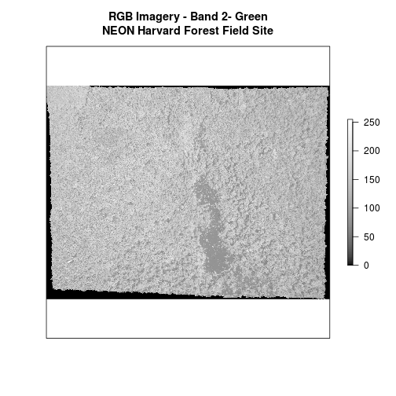
# view attributes of band 2
RGB_band2_HARV
class : RasterLayer
band : 2 (of 3 bands)
dimensions : 2317, 3073, 7120141 (nrow, ncol, ncell)
resolution : 0.25, 0.25 (x, y)
extent : 731998.5, 732766.8, 4712956, 4713536 (xmin, xmax, ymin, ymax)
coord. ref. : +proj=utm +zone=18 +datum=WGS84 +units=m +no_defs +ellps=WGS84 +towgs84=0,0,0
data source : /home/travis/build/datacarpentry/r-raster-vector-geospatial/_episodes_rmd/data/NEON-DS-Airborne-Remote-Sensing/HARV/RGB_Imagery/HARV_RGB_Ortho.tif
names : HARV_RGB_Ortho
values : 0, 255 (min, max)
Notice that band 2 is the second of 3 bands band: 2 (of 3 bands).
Challenge: Making Sense of Single Band Images
Compare the plots of band 1 (red) and band 2 (green). Is the forested area darker or lighter in band 2 (the green band) compared to band 1 (the red band)? >
Answers
# We'd expect a *brighter* value for the forest in band 2 (green) than in # band 1 (red) because the leaves on trees of most often appear "green" - # healthy leaves reflect MORE green light compared to red light
Raster Stacks in R
Next, we will work with all three image bands (red, green and blue) as an R
RasterStack object. We will then plot a 3-band composite, or full color,
image.
To bring in all bands of a multi-band raster, we use thestack() function.
# Use stack function to read in all bands
RGB_stack_HARV <-
stack("data/NEON-DS-Airborne-Remote-Sensing/HARV/RGB_Imagery/HARV_RGB_Ortho.tif")
# view attributes of stack object
RGB_stack_HARV
class : RasterStack
dimensions : 2317, 3073, 7120141, 3 (nrow, ncol, ncell, nlayers)
resolution : 0.25, 0.25 (x, y)
extent : 731998.5, 732766.8, 4712956, 4713536 (xmin, xmax, ymin, ymax)
coord. ref. : +proj=utm +zone=18 +datum=WGS84 +units=m +no_defs +ellps=WGS84 +towgs84=0,0,0
names : HARV_RGB_Ortho.1, HARV_RGB_Ortho.2, HARV_RGB_Ortho.3
min values : 0, 0, 0
max values : 255, 255, 255
We can view the attributes of each band the stack using RGB_stack_HARV@layers.
Or we if we have hundreds of bands, we can specify which band we’d like to view
attributes for using an index value: RGB_stack_HARV[[1]]. We can also use the
plot() and hist() functions on the RasterStack to plot and view the
distribution of raster band values.
# view raster attributes
RGB_stack_HARV@layers
[[1]]
class : RasterLayer
band : 1 (of 3 bands)
dimensions : 2317, 3073, 7120141 (nrow, ncol, ncell)
resolution : 0.25, 0.25 (x, y)
extent : 731998.5, 732766.8, 4712956, 4713536 (xmin, xmax, ymin, ymax)
coord. ref. : +proj=utm +zone=18 +datum=WGS84 +units=m +no_defs +ellps=WGS84 +towgs84=0,0,0
data source : /home/travis/build/datacarpentry/r-raster-vector-geospatial/_episodes_rmd/data/NEON-DS-Airborne-Remote-Sensing/HARV/RGB_Imagery/HARV_RGB_Ortho.tif
names : HARV_RGB_Ortho.1
values : 0, 255 (min, max)
[[2]]
class : RasterLayer
band : 2 (of 3 bands)
dimensions : 2317, 3073, 7120141 (nrow, ncol, ncell)
resolution : 0.25, 0.25 (x, y)
extent : 731998.5, 732766.8, 4712956, 4713536 (xmin, xmax, ymin, ymax)
coord. ref. : +proj=utm +zone=18 +datum=WGS84 +units=m +no_defs +ellps=WGS84 +towgs84=0,0,0
data source : /home/travis/build/datacarpentry/r-raster-vector-geospatial/_episodes_rmd/data/NEON-DS-Airborne-Remote-Sensing/HARV/RGB_Imagery/HARV_RGB_Ortho.tif
names : HARV_RGB_Ortho.2
values : 0, 255 (min, max)
[[3]]
class : RasterLayer
band : 3 (of 3 bands)
dimensions : 2317, 3073, 7120141 (nrow, ncol, ncell)
resolution : 0.25, 0.25 (x, y)
extent : 731998.5, 732766.8, 4712956, 4713536 (xmin, xmax, ymin, ymax)
coord. ref. : +proj=utm +zone=18 +datum=WGS84 +units=m +no_defs +ellps=WGS84 +towgs84=0,0,0
data source : /home/travis/build/datacarpentry/r-raster-vector-geospatial/_episodes_rmd/data/NEON-DS-Airborne-Remote-Sensing/HARV/RGB_Imagery/HARV_RGB_Ortho.tif
names : HARV_RGB_Ortho.3
values : 0, 255 (min, max)
# view attributes for one band
RGB_stack_HARV[[1]]
class : RasterLayer
band : 1 (of 3 bands)
dimensions : 2317, 3073, 7120141 (nrow, ncol, ncell)
resolution : 0.25, 0.25 (x, y)
extent : 731998.5, 732766.8, 4712956, 4713536 (xmin, xmax, ymin, ymax)
coord. ref. : +proj=utm +zone=18 +datum=WGS84 +units=m +no_defs +ellps=WGS84 +towgs84=0,0,0
data source : /home/travis/build/datacarpentry/r-raster-vector-geospatial/_episodes_rmd/data/NEON-DS-Airborne-Remote-Sensing/HARV/RGB_Imagery/HARV_RGB_Ortho.tif
names : HARV_RGB_Ortho.1
values : 0, 255 (min, max)
# view histogram of all 3 bands
hist(RGB_stack_HARV,
maxpixels = ncell(RGB_stack_HARV))
# plot all three bands separately
plot(RGB_stack_HARV,
col = grayscale_colors)
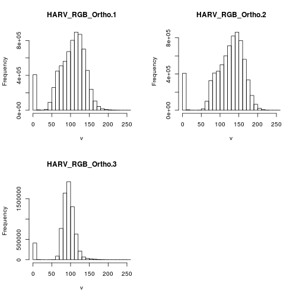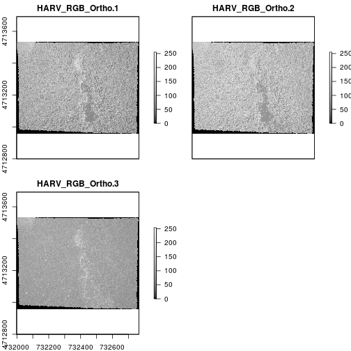
# revert to a single plot layout
par(mfrow = c(1, 1))
# plot band 2
plot(RGB_stack_HARV[[2]],
main = "Band 2\n NEON Harvard Forest Field Site",
col = grayscale_colors)
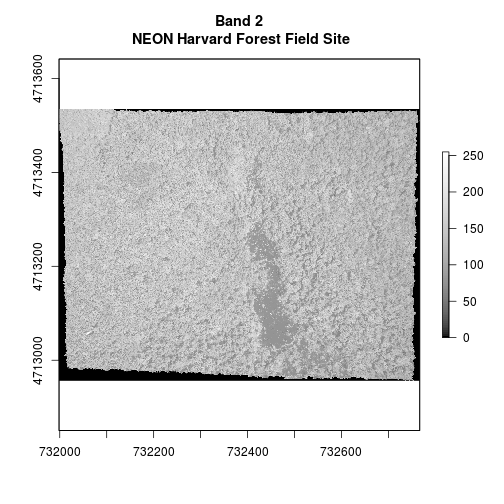
Create A Three Band Image
To render a final 3 band, color image in R, we use plotRGB().
This function allows us to:
- Identify what bands we want to render in the red, green and blue regions. The
plotRGB()function defaults to a 1=red, 2=green, and 3=blue band order. However, you can define what bands you’d like to plot manually. Manual definition of bands is useful if you have, for example a near-infrared band and want to create a color infrared image. - Adjust the
stretchof the image to increase or decrease contrast.
Let’s plot our 3-band image.
# Create an RGB image from the raster stack
plotRGB(RGB_stack_HARV,
r = 1, g = 2, b = 3)
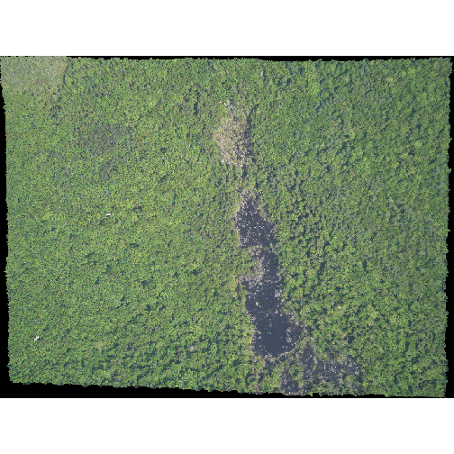
The image above looks pretty good. We can explore whether applying a stretch to
the image might improve clarity and contrast using stretch="lin" or
stretch="hist".


# what does stretch do?
plotRGB(RGB_stack_HARV,
r = 1, g = 2, b = 3,
scale = 800,
stretch = "lin")
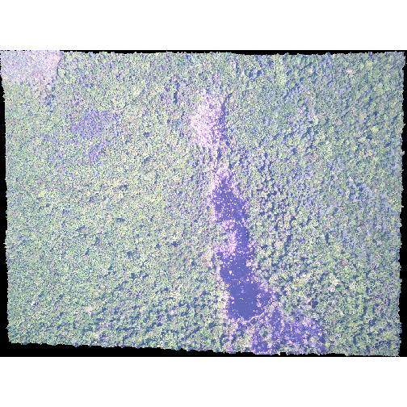
plotRGB(RGB_stack_HARV,
r = 1, g = 2, b = 3,
scale = 800,
stretch = "hist")
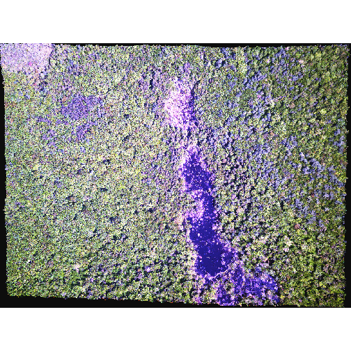
In this case, the stretch doesn’t enhance the contrast our image significantly given the distribution of reflectance (or brightness) values is distributed well between 0 and 255.
Challenge - NoData Values
Let’s explore what happens with NoData values when using
RasterStackandplotRGB. We will use theHARV_Ortho_wNA.tifGeoTIFF in theNEON-DS-Airborne-Remote-Sensing/HARVRGB_Imagery/directory.
- View the files attributes. Are there
NoDatavalues assigned for this file?- If so, what is the
NoDataValue?- How many bands does it have?
- Open the multi-band raster file in
R.- Plot the object as a true color image.
- What happened to the black edges in the data?
- What does this tell us about the difference in the data structure between
HARV_Ortho_wNA.tifandHARV_RGB_Ortho.tif(RobjectRGB_stack). How can you check?Answer the questions above using the functions we have covered so far in this tutorial.
Answers
# 1. # view attributes GDALinfo("data/NEON-DS-Airborne-Remote-Sensing/HARV/RGB_Imagery/HARV_Ortho_wNA.tif") # 2 Yes it has NoData values as they are assigned as -9999 # 3 3 bands # 4 # reading in file HARV_NA <- stack("data/NEON-DS-Airborne-Remote-Sensing/HARV/RGB_Imagery/HARV_Ortho_wNA.tif") # 5 plotRGB(HARV_NA, r = 1, g = 2, b = 3)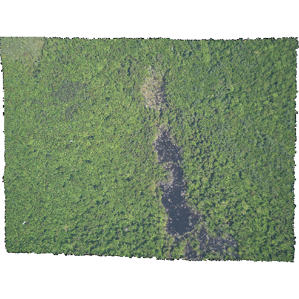
#6 The black edges are not plotted. #7 Both have NoData values, however, in RGB_stack the NoData value is not # defined in the tiff tags, thus R renders them as black as the reflectance # values are 0. The black edges in the other file are defined as -9999 and R # renders them as NA. GDALinfo("data/NEON-DS-Airborne-Remote-Sensing/HARV/RGB_Imagery/HARV_RGB_Ortho.tif")
Data Tip
We can create a RasterStack from several, individual single-band GeoTIFFs too. Check out: Raster Time Series Data in R for a tutorial on how to do this.
RasterStack vs RasterBrick in R
The R RasterStack and RasterBrick object types can both store multiple bands.
However, how they store each band is different. The bands in a RasterStack are
stored as links to raster data that is located somewhere on our computer. A
RasterBrick contains all of the objects stored within the actual R object.
In most cases, we can work with a RasterBrick in the same way we might work
with a RasterStack. However a RasterBrick is often more efficient and faster
to process - which is important when working with larger files.
We can turn a RasterStack into a RasterBrick in R by using
brick(StackName). Let’s use the object.size() function to compare stack
and brick R objects.
# view size of the RGB_stack object that contains our 3 band image
object.size(RGB_stack_HARV)
41784 bytes
# convert stack to a brick
RGB_brick_HARV <- brick(RGB_stack_HARV)
# view size of the brick
object.size(RGB_brick_HARV)
170896376 bytes
Notice that in the RasterBrick, all of the bands are stored within the actual
object. Thus, the RasterBrick object size is much larger than the
RasterStack object.
You use plotRGB to block a RasterBrick too.
# plot brick
plotRGB(RGB_brick_HARV)
Challenge: What Methods Can Be Used on an R Object?
We can view various methods available to call on an
Robject withmethods(class=class(objectNameHere)). Use this to figure out:
- What methods can be used to call on the
RGB_stack_HARVobject?- What methods are available for a single band within
RGB_stack_HARV?- Why do you think there is a difference?
Answers
# 1 # methods for calling a stack methods(class=class(RGB_stack_HARV)) # 143 methods! # 2 # methods for calling a band (1) with a stack methods(class=class(RGB_stack_HARV[1])) #3 There are far more thing one could or wants to ask of a full stack than of # a single band.
Key Points
A single raster file can contain multiple bands or layers.